Obiettivi
- Distinguere le origini anatomiche dell’astigmatismo e classificarlo per regolarità, orientamento e posizione delle focaline.
- Descrivere il conoide di Sturm e riconoscere i due meridiani principali.
- Calcolare i poteri di lenti cilindriche, sferocilindriche e toriche nei meridiani principali.
- Passare da superfici e croci ottiche alla ricetta e alla sua trasposta.
- Risolvere gli esempi guidati, dichiarando le ipotesi del modello oculare.
- Interpretare gli assi nei sistemi TABO e internazionale rappresentati nel materiale.
Che cosa distingue una lente astigmatica da una sferica?
Livello intuitivo: Una lente sferica devia allo stesso modo la luce nelle diverse direzioni attorno al suo centro. Una lente astigmatica ha invece poteri differenti in direzioni differenti: un punto può formare due brevi linee a distanze diverse, anziché un solo punto.
Per essere maggiormente rigorosi: Nel modello di Gauss, per un oggetto assiale all’infinito, una lente astigmatica presenta due poteri principali. Le lenti non assosimmetriche studiate qui producono una o due focaline astigmatiche. Trattiamo l’astigmatismo regolare attraverso due meridiani principali ortogonali; non ogni irregolarità corneale si riduce a questo modello.
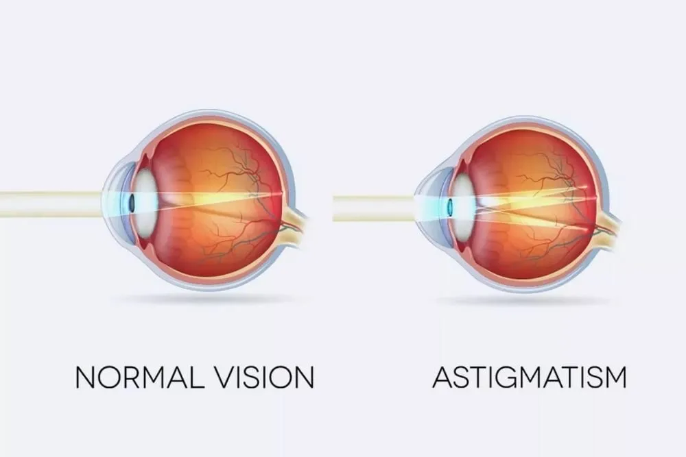
Astigmatismo dell’occhio
Origini anatomiche
Livello intuitivo: La curvatura della cornea può essere diversa in due direzioni, come accade sulla superficie di un pallone da rugby. Anche la faccia posteriore della cornea e il cristallino contribuiscono all’astigmatismo dell’occhio.
Per essere maggiormente rigorosi: La presentazione distingue astigmatismo corneale anteriore, corneale posteriore e lenticolare. Il contributo totale deriva dall’intero sistema ottico. La metafora del pallone descrive una differenza di curvature, senza implicare necessariamente una deformazione patologica.
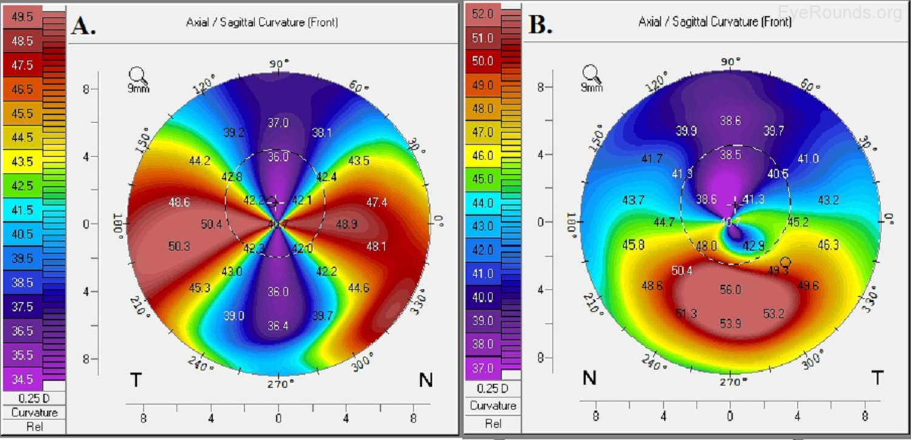
Quanto vale l’astigmatismo?
Per i due meridiani principali orizzontale e verticale:
Cosa Vuol dire?
Livello intuitivo: Sottraiamo i due poteri e consideriamo la grandezza della differenza. Se un meridiano ha 63 D e l’altro 60 D, l’astigmatismo è 3 D.
Per essere maggiormente rigorosi: è non negativo e si esprime in diottrie. I simboli e indicano orizzontale e verticale nelle figure della presentazione. Per un astigmatismo obliquo, il calcolo riguarda comunque i due meridiani principali, che non coincidono con 180° e 90°.
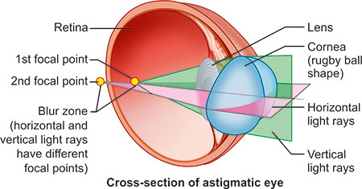
Regolare e irregolare
Livello intuitivo: Nell’astigmatismo regolare riconosciamo due direzioni principali ordinate. In quello irregolare, il comportamento cambia in modo più complesso da una zona all’altra.
Per essere maggiormente rigorosi: Nel modello regolare, i meridiani di massimo e minimo potere sono ortogonali e la correzione sferocilindrica descrive il contributo principale. Irregolarità locali possono comparire con alterazioni della superficie, traumi, infezioni, esiti chirurgici o instabilità del film lacrimale. Una superficie corneale reale non deve avere curvatura costante lungo l’intero meridiano per essere descritta da una componente astigmatica regolare.
Secondo regola, contro regola e obliquo
| Orientamento | Meridiano di maggior potere nel modello corneale | Significato |
|---|---|---|
| Secondo regola, SR | Circa verticale | La curvatura verticale è maggiore di quella orizzontale |
| Contro regola, CR | Circa orizzontale | La curvatura orizzontale è maggiore di quella verticale |
| Obliquo | Inclinato rispetto ai precedenti | I due meridiani principali restano ortogonali nel modello regolare |
Livello intuitivo: L’orientamento descrive quale direzione devia di più la luce. L’asse scritto nella ricetta indica invece il meridiano in cui il cilindro correttivo non aggiunge potere: occorre distinguere queste due informazioni.
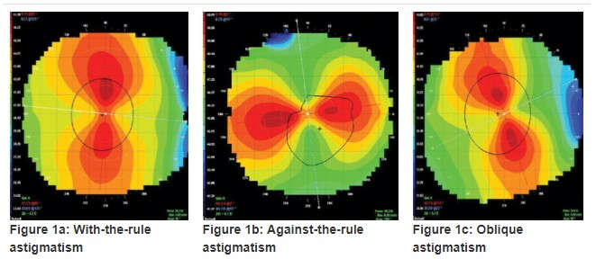
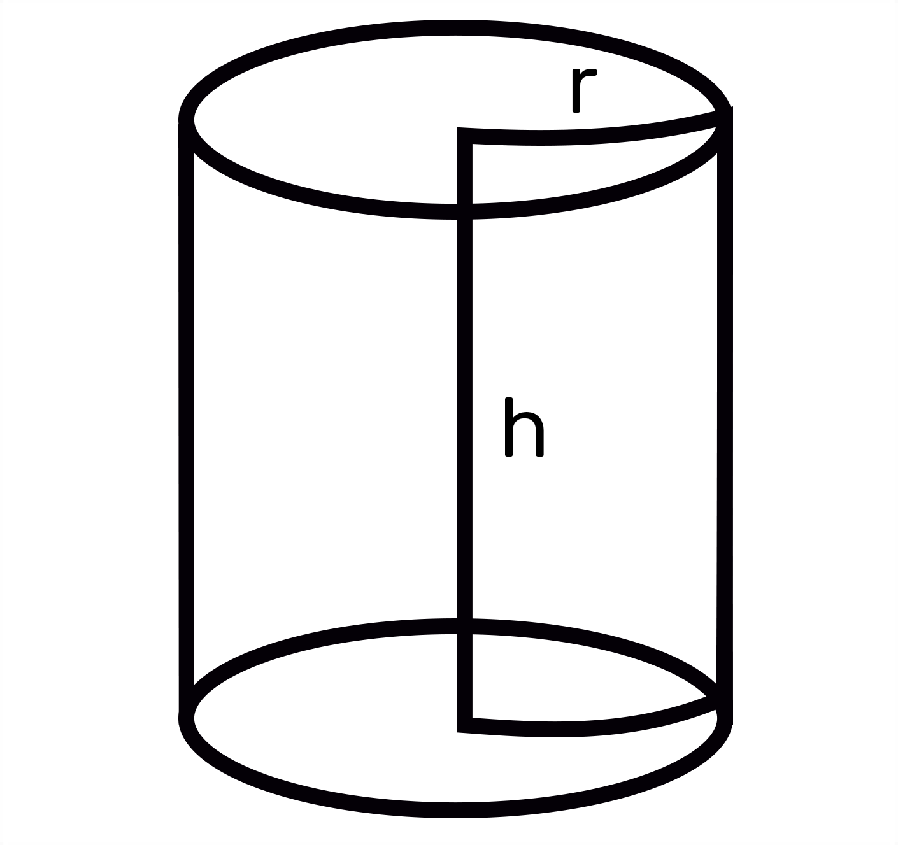
Il conoide di Sturm
Due meridiani, due focaline
Livello intuitivo: Seguiamo un fascio che attraversa una lente astigmatica. Una direzione si concentra prima dell’altra. Troviamo una prima linea, poi sezioni ellittiche, un cerchio, altre ellissi e infine una seconda linea perpendicolare alla prima.
Per essere maggiormente rigorosi: Il conoide di Sturm è il volume occupato dal fascio rifratto nel modello astigmatico parassiale. Nella sferocilindrica, un meridiano riceve il solo potere sferico e quello perpendicolare la somma di sfera e cilindro. Nelle figure in aria della presentazione:
Queste focali si riferiscono a lenti o sistemi equivalenti in aria. Se il mezzo immagine ha indice , la relazione generale è .
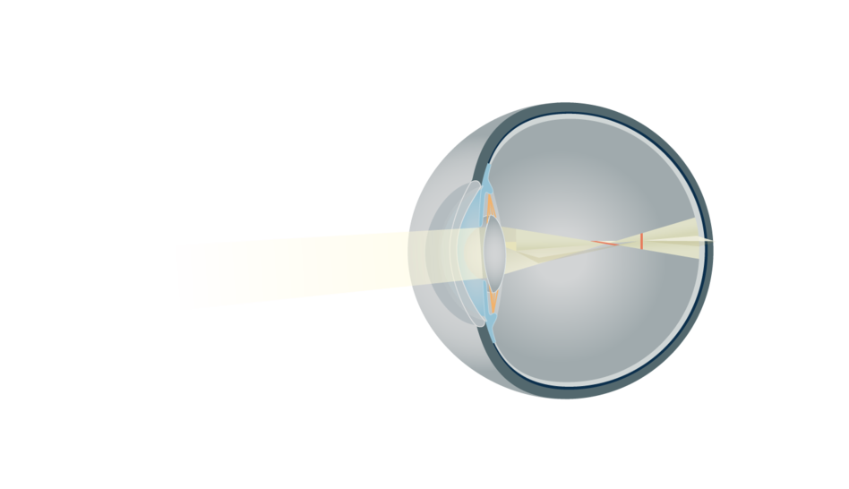
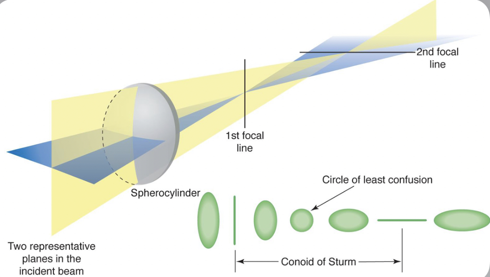
Orientamento delle focaline e cerchio di minima confusione
Livello intuitivo: Quando i raggi si concentrano nella direzione verticale, resta estesa la direzione orizzontale: la focalina è orizzontale. Quando si concentrano nella direzione orizzontale, la focalina è verticale.
Per essere maggiormente rigorosi: Nella configurazione della presentazione, il meridiano verticale è più potente: la focalina primaria è orizzontale e quella secondaria verticale. “Prima” e “seconda” indicano l’ordine incontrato dal fascio, quindi l’orientamento si inverte se cambia il meridiano più potente. L’intervallo fra le focaline è l’intervallo di Sturm. Il cerchio di minima confusione è un compromesso geometrico, non una messa a fuoco puntiforme.
Domanda: quale meridiano ha più potere se la prima focalina è orizzontale? Risposta: quello verticale, nella configurazione convergente rappresentata.
Classificazione rispetto alla retina
Consideriamo un oggetto all’infinito e accomodazione a riposo.
| Tipo | Posizione delle due focaline |
|---|---|
| Ipermetropico composto | Entrambe dietro la retina |
| Ipermetropico semplice | Una sulla retina, l’altra dietro |
| Misto | Una davanti, l’altra dietro |
| Miopico semplice | Una sulla retina, l’altra davanti |
| Miopico composto | Entrambe davanti alla retina |
Per essere maggiormente rigorosi: Si descrivono le posizioni assiali delle focaline, senza confonderle con “sopra” e “sotto” la retina. “Misto” indica un meridiano miopico e uno ipermetropico.
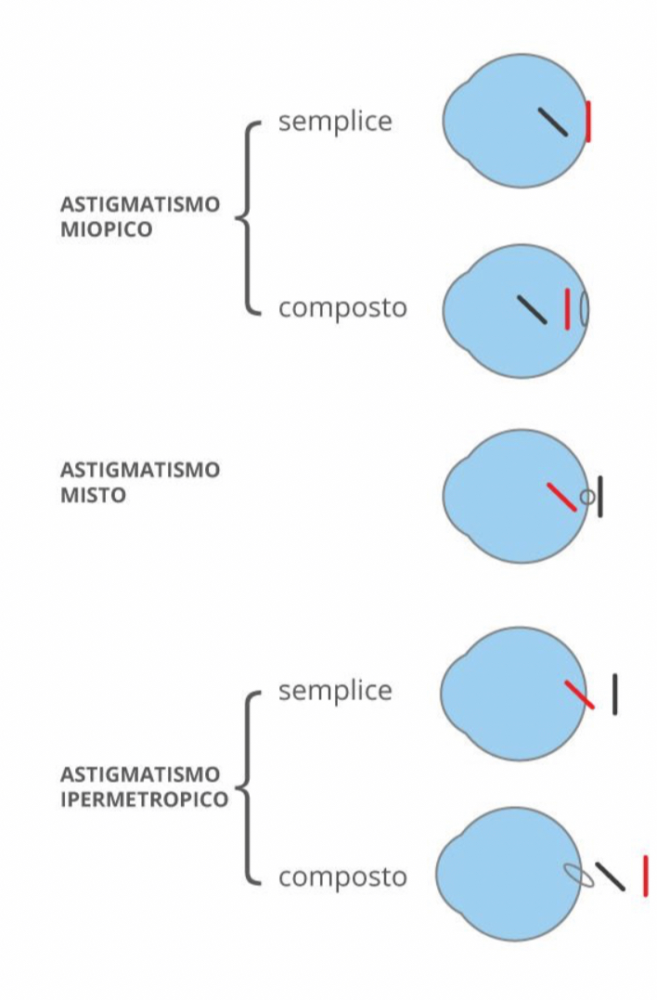
Famiglie di lenti astigmatiche
| Famiglia | Superfici o combinazione |
|---|---|
| Piano-cilindrica | Un piano e un cilindro |
| Bicilindrica ad assi paralleli | Due cilindri con assi paralleli |
| Bicilindrica ad assi incrociati | Due cilindri con assi ortogonali |
| Sferocilindrica | Una superficie sferica e una cilindrica |
| Piano-torica | Un piano e una superficie torica |
| Sferotorica | Una superficie sferica e una torica |
| Bitorica | Due superfici toriche |
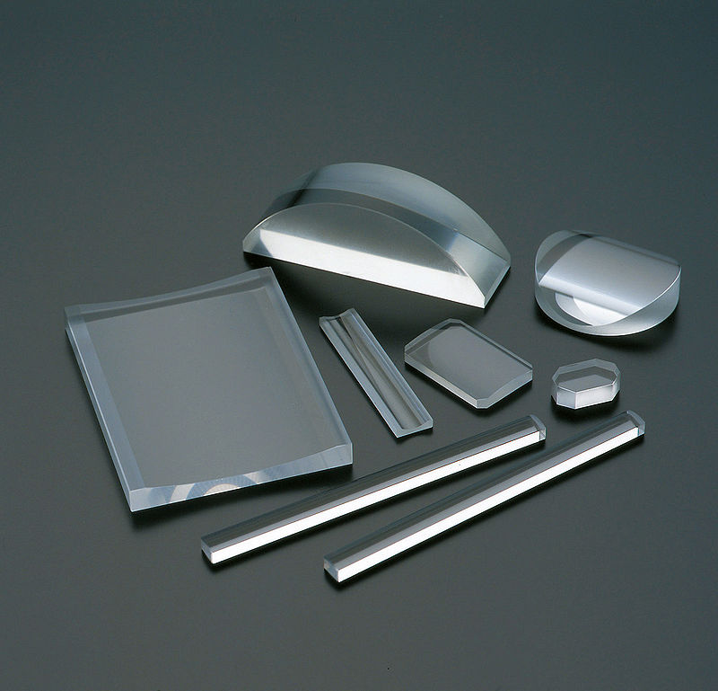
Per essere maggiormente rigorosi: Le somme di potere delle sezioni successive assumono il limite di lente sottile o elementi a contatto, con meridiani principali allineati. Per superfici separate da spessore in un materiale di indice , il potere equivalente di ciascun meridiano comprende il termine di spessore:
Lenti cilindriche semplici o piano-cilindriche
Geometria e asse
Livello intuitivo: Un cilindro si ottiene facendo ruotare un rettangolo attorno a un lato. Tagliando una superficie cilindrica con un piano parallelo all’asse otteniamo una lente piano-cilindrica, convessa o concava.
Per essere maggiormente rigorosi: La lente può essere trattata come sottile se lo spessore è trascurabile nel modello. Il meridiano parallelo all’asse non presenta curvatura cilindrica, mentre quello perpendicolare presenta il raggio . Ruotando la lente ruotano anche i suoi meridiani.
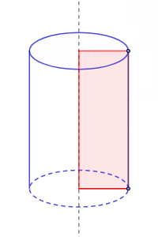
Potere nei due meridiani
Cosa Vuol dire?
Livello intuitivo: Lungo l’asse il cilindro non aggiunge potere. Nella direzione perpendicolare può far convergere o divergere la luce.
Per essere maggiormente rigorosi: La formula della presentazione vale per una piano-cilindrica sottile in aria, usando il raggio orientato della superficie curva con il corretto salto d’indice. Per una singola superficie la relazione generale è . In una lente il segno dipende anche da quale faccia è curva, oltre che dalla sua curvatura.
Focalina astigmatica
Livello intuitivo: Un fascio parallelo attraversando una lente cilindrica converge su una linea parallela all’asse del cilindro, oppure sembra provenire da quella linea se il cilindro è negativo.
Per essere maggiormente rigorosi: La focalina è reale per una piano-cilindrica convergente e virtuale per una divergente. La sua estensione dipende dal fascio illuminante e dall’apertura. Nel disegno ideale senza potere lungo l’asse, l’estensione in quella direzione riproduce quella del fascio incidente, che non coincide necessariamente con tutta la lente.
Lenti bicilindriche e sistemi di cilindri
Assi paralleli
Con entrambi gli assi verticali:
Livello intuitivo: I due cilindri lavorano nella stessa direzione. Sommiamo algebricamente i loro poteri; lungo l’asse entrambi danno zero. Due contributi opposti possono anche annullarsi.
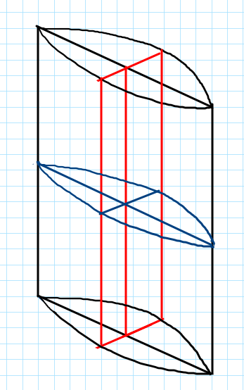
Assi incrociati
Per un primo cilindro con asse orizzontale e un secondo con asse verticale:
Livello intuitivo: Ciascun cilindro lavora nella direzione in cui l’altro non aggiunge potere. Possiamo scegliere separatamente i due poteri principali.
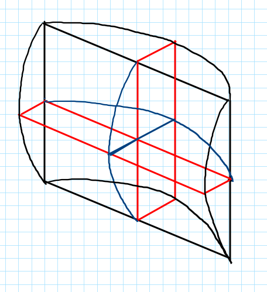
Cilindri separati e limite a contatto
Per assi paralleli e distanza in un mezzo di indice :
Livello intuitivo: La distanza fra le lenti cambia il risultato. Nel caso di due cilindri positivi della figura si forma una sola focalina; la seconda lente modifica la convergenza preparata dalla prima. A distanza nulla recuperiamo la somma semplice.
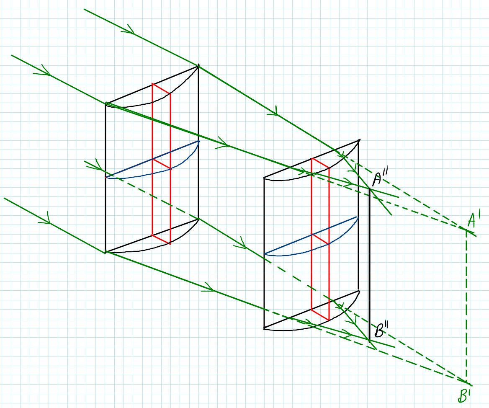
Per gli assi incrociati, le focali dei singoli cilindri in aria sono:
Per essere maggiormente rigorosi: Due cilindri incrociati separati possono produrre due focaline. Se le focaline coincidono si ottiene un fuoco comune nella configurazione considerata. A contatto e con poteri uguali, la croce ottica coincide con quella di una lente sferica. Con distanza non nulla occorre confrontare le posizioni dei fuochi nello stesso riferimento, non soltanto i due valori di potere.
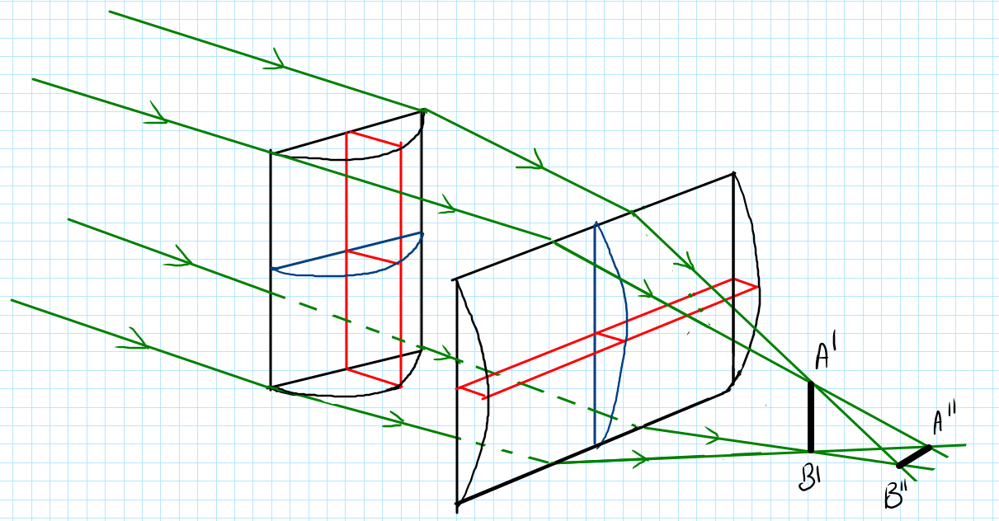
Lenti sferocilindriche
Livello intuitivo: La sfera dà lo stesso contributo in tutte le direzioni. Il cilindro aggiunge il suo potere soltanto nel meridiano perpendicolare al proprio asse.
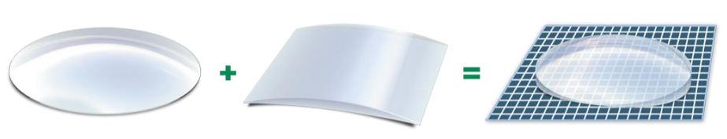
Per asse verticale, :
Per asse orizzontale, :
Per essere maggiormente rigorosi: L’ordine delle due superfici non modifica la somma nel limite sottile. Sfera e cilindro possono essere positivi o negativi: nei due meridiani occorre sempre fare una somma algebrica.
| Combinazione raffigurata | Asse | Potere verticale | Potere orizzontale |
|---|---|---|---|
| Sfera positiva, cilindro positivo | 90° | ||
| Sfera negativa, cilindro positivo | 90° | ||
| Sfera positiva, cilindro negativo | 180° | ||
| Sfera negativa, cilindro negativo | 180° |
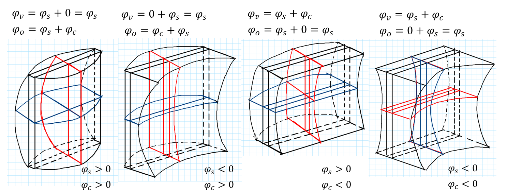
Lenti toriche
Toro e curvature principali
Livello intuitivo: Un toro si genera facendo ruotare una circonferenza attorno a una retta del suo piano. La superficie può ricordare una ciambella, una zucca o un bariletto. Una zona torica usata per una lente ha due curvature principali.
Per le sezioni toriche convesse o concave considerate nella presentazione:
Per essere maggiormente rigorosi: I due raggi orientati hanno lo stesso segno nella zona ottica a doppia curvatura concorde qui considerata. La condizione riguarda questa zona e questo modello: altre parti di un toro geometrico possono avere curvature principali discordi. I poteri della lente completa dipendono anche dalla seconda superficie. Per una faccia di uscita si usa il relativo salto d’indice, non automaticamente .
Piano-torica
Livello intuitivo: Combinando un piano con una superficie torica otteniamo due poteri diversi. Nelle piano-toriche ordinarie trattate qui sono entrambi positivi oppure entrambi negativi.
La figura confronta una superficie con in entrambi i meridiani con una avente e : è la differenza fra i due valori a caratterizzare l’astigmatismo.
Sferotorica
Livello intuitivo: Una superficie sferica aggiunge lo stesso potere a entrambi i meridiani della torica. Così possiamo ottenere una stessa ricetta scegliendo forme diverse delle superfici.
Per essere maggiormente rigorosi: La presentazione evidenzia che la scelta delle superfici sferotoriche può migliorare il comportamento dei fasci obliqui, lo spessore e il campo utile rispetto a forme semplici. Il miglioramento dipende dal progetto e dalla configurazione, non dalla sola etichetta “sferotorica”.
Bitorica
Livello intuitivo: Entrambe le superfici sono toriche. Sommiamo i contributi verticali fra loro e quelli orizzontali fra loro.
Per essere maggiormente rigorosi: Le relazioni valgono nel limite sottile con meridiani allineati. Una rotazione relativa delle superfici richiede una composizione più generale.
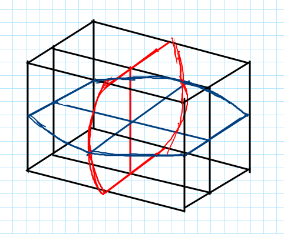
Sezioni principali e croci ottiche
Rappresentazione schematica
Livello intuitivo: Per capire una lente non è sempre necessario disegnarla in tre dimensioni. La tagliamo idealmente lungo i due meridiani principali e studiamo le due sezioni come lenti sferiche.
Per essere maggiormente rigorosi: Il meridiano a 90° è la sezione verticale e quello a 180° quella orizzontale nelle figure. In ogni sezione distinguiamo il contributo del primo e del secondo diottro.
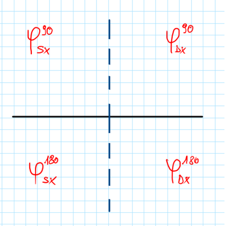
Somma delle croci
Livello intuitivo: La croce ottica scrive un potere sulla direzione verticale e uno sull’orizzontale. Per comporre due superfici sommiamo verticale con verticale e orizzontale con orizzontale.
Per essere maggiormente rigorosi: La croce risultante descrive i poteri principali nel limite sottile. Da essa si possono costruire diverse combinazioni equivalenti, se i vincoli geometrici delle superfici lo consentono. La croce non identifica da sola lo spessore, i materiali o le aberrazioni della lente.
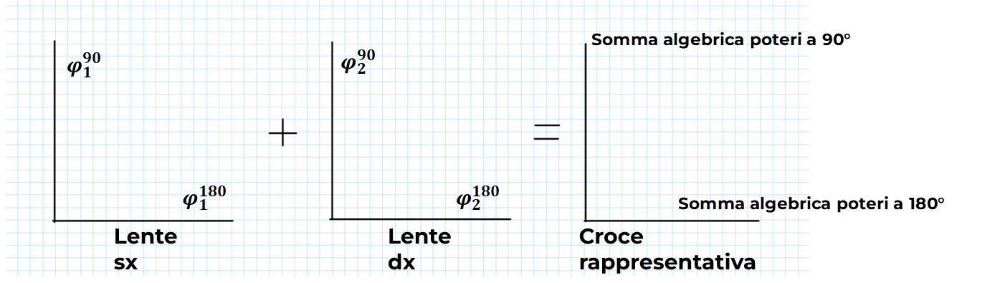
Croci ottiche e ricette oftalmiche
Sfera, cilindro e asse
La ricetta sferocilindrica specifica sfera , cilindro e asse :
Cosa Vuol dire?
Livello intuitivo: Il cilindro lascia invariato il potere lungo il suo asse. A 90° dall’asse aggiunge tutto il proprio valore. Quindi l’asse non è la direzione del massimo contributo cilindrico.
Per essere maggiormente rigorosi: Gli assi sono equivalenti modulo 180°. Le ricette seguenti descrivono poteri ottici equivalenti; la stessa notazione sferocilindrica può descrivere una lente realizzata con superfici toriche.
| Tipo | Croce e ricetta |
|---|---|
| Piano-cilindrica, asse 180° | , ; , , |
| Piano-cilindrica, asse 90° | , ; , , |
| Piano-torica | Due poteri non nulli, differenti e concordi nella superficie ordinaria considerata: a 90°, a 180° |
| Sferocilindrica, asse 180° | , |
| Sferocilindrica, asse 90° | , |
| Sferotorica | , |
| Bicilindrica parallela | Un meridiano nullo; nell’altro la somma dei due cilindri |
| Bicilindrica incrociata | Un potere dato da ciascun cilindro nel meridiano perpendicolare al suo asse |
| Bitorica | Somma dei contributi delle due toriche in ciascun meridiano |
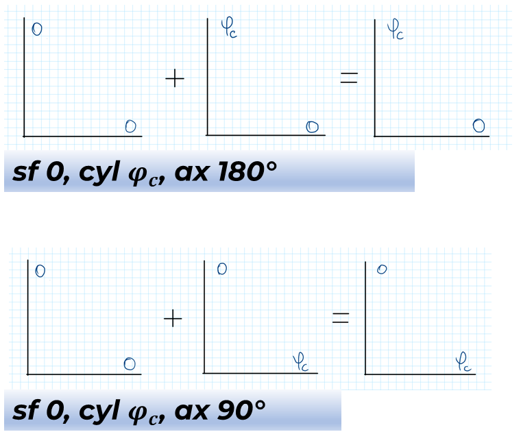
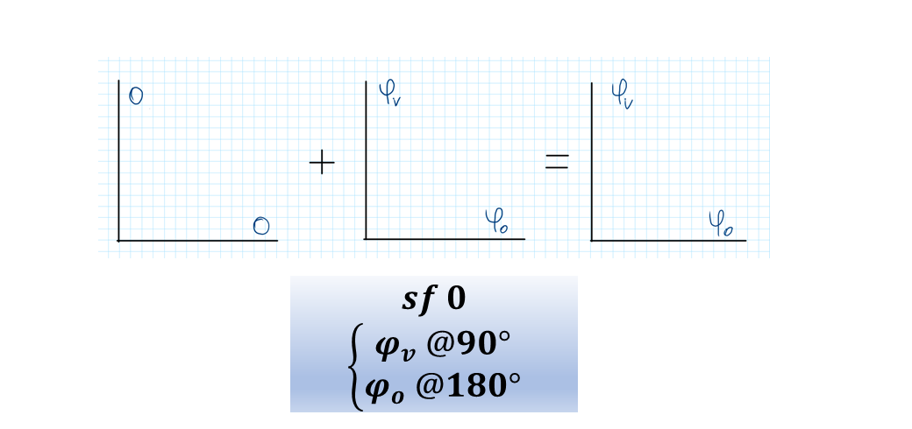
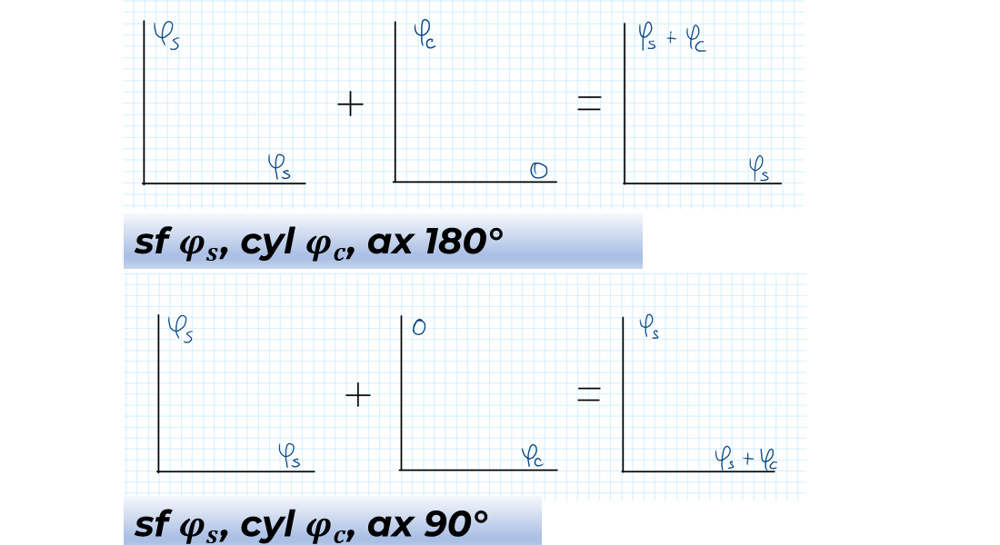
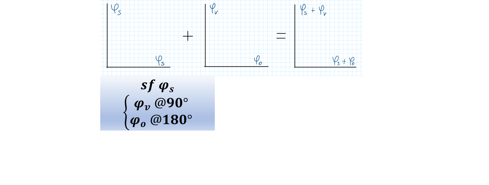
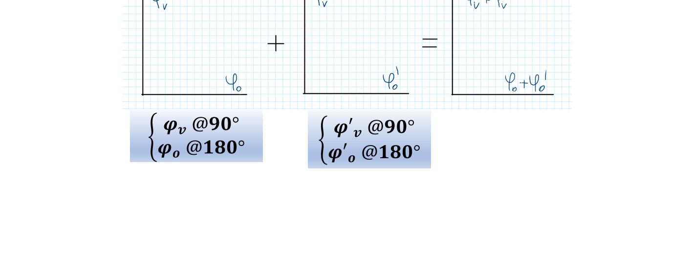
Esercizi guidati: ricetta e poteri oculari
Il modello usato negli esercizi
Per essere maggiormente rigorosi: Come nella presentazione, assumiamo un occhio didattico per cui 60 D in ciascun meridiano portano il fuoco sulla retina, a riposo accomodativo. Trascuriamo la distanza fra lente e occhio e sommiamo i poteri nello stesso piano:
Livello intuitivo: Se un meridiano dell’occhio ha 3 D di troppo, lo compensiamo con −3 D. Se gli mancano 2 D, servono +2 D. Il riferimento di 60 D è un’ipotesi di questi esercizi: il potere dell’occhio reale non si deduce dalla sola ricetta senza un modello e una geometria.
Miopico semplice: secondo e contro regola
Domanda: determinare poteri oculari e ricetta per un astigmatismo miopico semplice di 3 D, prima SR e poi CR.
| Caso | Occhio a 90° | Occhio a 180° | Correzione a 90° | Correzione a 180° | Ricetta |
|---|---|---|---|---|---|
| SR | 63 D | 60 D | −3 D | 0 D | sf 0 D, cyl −3 D, ax 180° |
| CR | 60 D | 63 D | 0 D | −3 D | sf 0 D, cyl −3 D, ax 90° |
Livello intuitivo: Un meridiano è già emmetrope, l’altro è miopico. Ruotando il cilindro di 90° passiamo dal caso SR al caso CR.
Miopico composto
Domande: determinare poteri oculari e tipo di astigmatismo per sf −2 D, cyl −1 D, ax 180°, e per la stessa ricetta con asse 90°.
| Asse | Correzione a 90° | Correzione a 180° | Occhio a 90° | Occhio a 180° | Tipo |
|---|---|---|---|---|---|
| 180° | −3 D | −2 D | 63 D | 62 D | Miopico composto SR, |
| 90° | −2 D | −3 D | 62 D | 63 D | Miopico composto CR, |
Ipermetropico semplice
Domande: determinare poteri oculari e tipo per sf 0 D, cyl +2 D, ax 90°, e poi con asse 180°.
| Asse | Correzione a 90° | Correzione a 180° | Occhio a 90° | Occhio a 180° | Tipo |
|---|---|---|---|---|---|
| 90° | 0 D | +2 D | 60 D | 58 D | Ipermetropico semplice SR, |
| 180° | +2 D | 0 D | 58 D | 60 D | Ipermetropico semplice CR, |
Ipermetropico composto
Primo esercizio: la correzione ha +1 D a 90° e +3 D a 180°. I poteri oculari sono:
È ipermetropico composto SR, con . Due ricette equivalenti sono sf +1 D, cyl +2 D, ax 90° e sf +3 D, cyl −2 D, ax 180°.
Secondo esercizio: un ipermetropico composto CR ha astigmatismo 2 D e meridiano più potente di 59 D. Il meridiano orizzontale ha 59 D, quello verticale 57 D. La correzione è quindi +1 D a 180° e +3 D a 90°.
Ricette equivalenti: sf +1 D, cyl +2 D, ax 180°; oppure sf +3 D, cyl −2 D, ax 90°. Possiamo anche usare due cilindri incrociati: +3 D ax 180° e +1 D ax 90°. Una sferotorica equivalente può avere sfera +0,5 D e contributi torici +2,5 D a 90° e +0,5 D a 180°. La ricetta con due valori meridionali descrive i contributi della torica, non due cilindri con quegli stessi assi.
Astigmatismo misto: quattro esercizi
- Data sf +0,5 D, cyl −2 D, ax 180°, trovare occhio e classificazione.
- Dato misto CR di 1,5 D e meridiano meno potente di 59,5 D, trovare poteri e ricette equivalenti.
- Data sf −1 D, cyl +3 D, ax 90°, trovare occhio e classificazione.
- Dato misto CR di 4 D e meridiano più potente di 62 D, trovare poteri e ricette equivalenti.
| Esercizio | Correzione a 90° | Correzione a 180° | Occhio a 90° | Occhio a 180° | Classificazione |
|---|---|---|---|---|---|
| 1 | −1,5 D | +0,5 D | 61,5 D | 59,5 D | Misto SR, 2 D |
| 2 | +0,5 D | −1 D | 59,5 D | 61 D | Misto CR, 1,5 D |
| 3 | −1 D | +2 D | 61 D | 58 D | Misto SR, 3 D |
| 4 | +2 D | −2 D | 58 D | 62 D | Misto CR, 4 D |
Per l’esercizio 2: sf −1 D, cyl +1,5 D, ax 180°; oppure sf +0,5 D, cyl −1,5 D, ax 90°. Per il 4: sf −2 D, cyl +4 D, ax 180°; oppure sf +2 D, cyl −4 D, ax 90°.
Per essere maggiormente rigorosi: Nel secondo caso . Un’etichetta “62” presente nella slide 61 non è coerente con i dati; il valore corretto è 61 D. Il caso è misto, senza aggiungere la qualifica “ipermetropico” alla classificazione.
Sferocilindrica equivalente e trasposta
Dalla croce alla ricetta
Se e sono i due poteri principali, ordinati algebricamente:
Oppure, con cilindro negativo:
Livello intuitivo: Scegliamo uno dei due poteri come sfera. Il cilindro aggiunge la differenza nell’altra direzione. Le due ricette producono la stessa croce.
Regola di trasposizione
Per essere maggiormente rigorosi: La trasposizione cambia la scrittura, mantenendo i poteri principali. Negli assi orizzontali si può indicare 180° invece di 0°.
Esempio della presentazione: +5 D a 90° e −2 D a 180°.
Ricette: sistemi TABO e internazionale
Livello intuitivo: L’asse è un angolo, ma prima di leggerlo dobbiamo sapere da quale punto di vista è disegnato. Guardare il paziente oppure guardare nella sua stessa direzione può invertire il verso di lettura.
Per essere maggiormente rigorosi: Nella convenzione illustrata dalla presentazione, TABO usa il punto di vista dell’esaminatore e una numerazione comune per i due occhi. Il sistema denominato “internazionale” nella figura usa il punto di vista del paziente e il verso dall’interno verso l’esterno. Per quelle specifiche rappresentazioni:
Esempio: per l’occhio sinistro, 30° nel sistema internazionale della figura corrispondono a 150° TABO. Prima di trasferire un asse fra strumenti o ricette, si verifica la convenzione dichiarata. L’appartenenza professionale da sola non identifica il sistema impiegato.